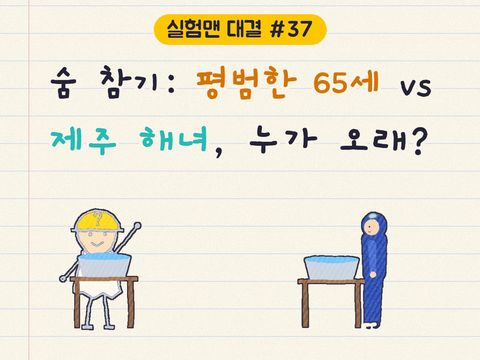
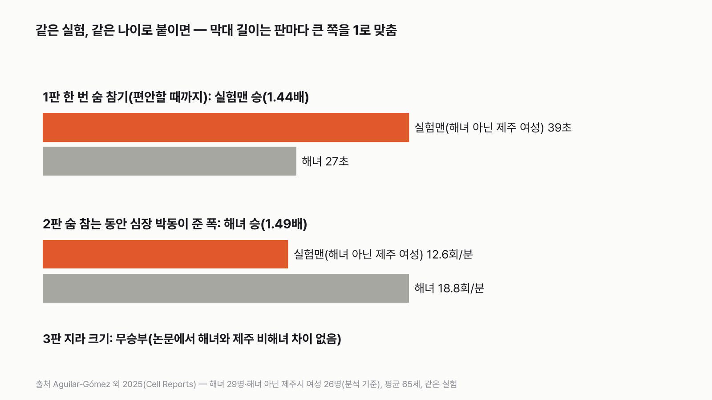
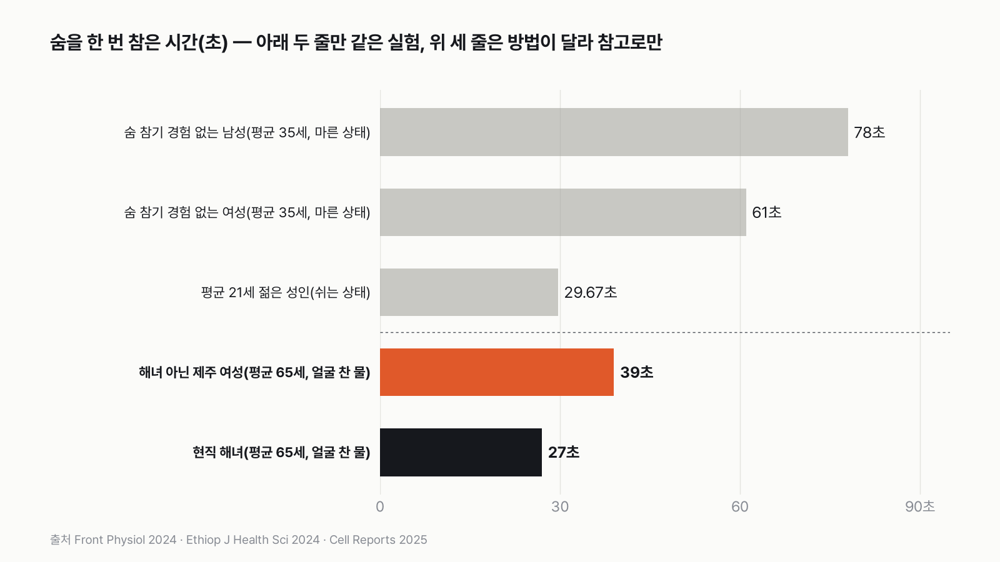
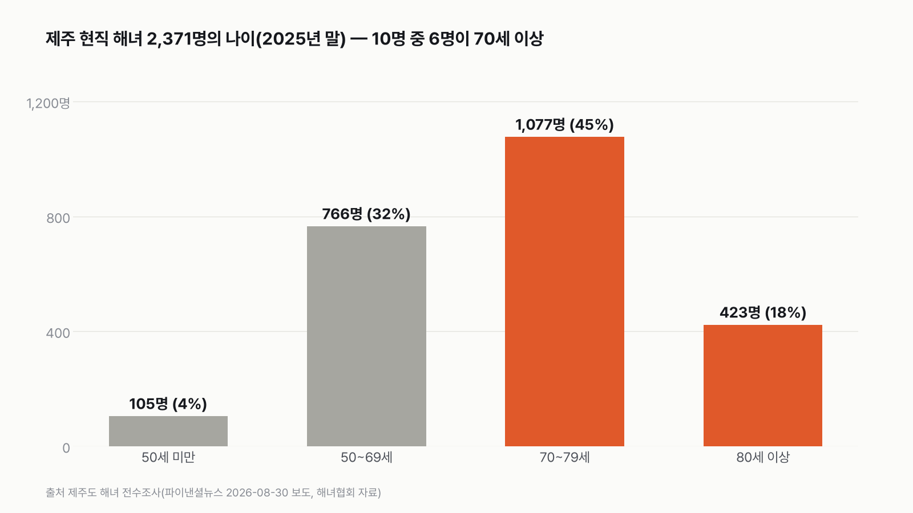
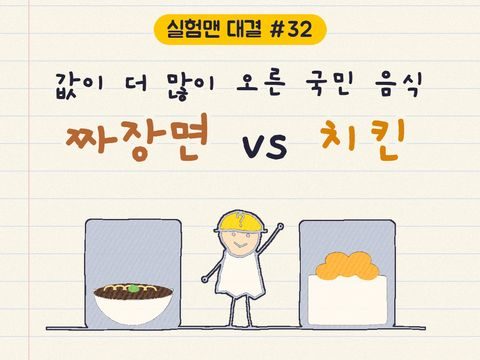
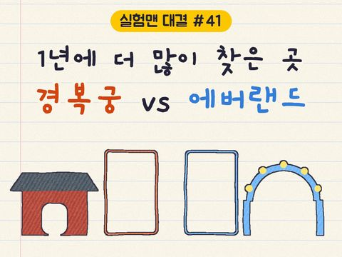
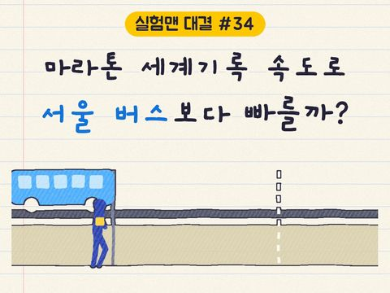

65세 실험맨 vs 제주 해녀, 숨 참기로 해녀를 이기는 조건이 있을까
결과를 보기 전에 먼저 골라 주세요. 투표하면 독자 예상과 데이터 결과를 나란히 보여 드려요.

독자 투표
평균 한국인이 제주 해녀를 이기는 조건이 있을까?
3줄 요약
- 제주 해녀는 하루 수십 번 바다에 들어가는 숨 참기의 달인이에요. 평범한 사람이 해녀를 이길 수 있는 판이 하나라도 있을까요?
- 이번 실험맨은 평균 한국인이 아니라, '해녀가 아닌 65세 제주 여성'의 대역이에요. 비교한 논문이 그렇게 쟀거든요.
- 같은 실험, 같은 나이로 세 판을 붙였어요. 투표하면 결과가 바로 아래에 열려요.
조건과 규칙
- 실험맨은 '해녀가 아닌 65세 제주 여성'의 대역이에요. 해녀와 해녀 아닌 사람을 같은 방법으로 잰 논문은 하나뿐인데, 그 논문이 나이를 맞춘 평균 65세 제주 여성들과 비교했어요. 그래서 이번 실험맨은 60대 번호표를 달았어요.
- 판정에는 그 논문 한 편에서 같은 실험으로 잰 숫자만 써요. 해녀와 해녀 아닌 제주 여성을 30명씩 모았고, 분석에는 29명과 26명이 들어갔어요.
- 세 판이에요. 숨을 한 번 편안히 참을 수 있을 때까지 참기, 숨 참는 동안 몸이 보이는 반응, 그리고 몸속 '산소 창고'예요.
- 바다에서 실제로 물질하는 기록은 해녀만 잰 숫자라 맞댈 상대가 없어서 점수 밖에서 보여 드려요.
- 찬 물에 얼굴을 담그고 숨을 참는 건 훈련 없이 따라 하면 위험해요. 이 글은 기록을 비교할 뿐이니 따라 하지 마세요.
결과 요약
3판 1승 1패 1무 → 이기는 조건이 '있다'(65세 제주 여성 기준)
해녀가 12초 먼저 고개를 들었지만, 대신 해녀는 심장 박동이 1.5배 더 크게 줄었어요.
- 한 번 숨 참기에서는 실험맨이 이겼어요. 실온보다 10도 찬 물에 얼굴을 담그고 편안히 참을 수 있을 때까지 참았더니, 해녀 아닌 65세 제주 여성은 39초, 해녀는 27초였어요.
- 숨 참는 동안 심장 박동을 늦추는 반응은 해녀가 1.5배 강했어요. 잠수에 맞춰진 몸은 해녀 쪽이에요.
- 실제 바다에서는 견줄 기록조차 없어요. 해녀는 하루 4시간 넘게 물질하며 100번 가까이 잠수하고, 바다에 있는 시간의 절반 넘게 물속에 있어요.
그래서? 해녀는 '오래 한 번'이 아니라 '짧게 여러 번'의 달인이에요. 그래서 오래 버티기 한 판만은 해녀 아닌 사람에게 내줬어요.
독자 예상 vs 데이터 결과
평균 한국인이 제주 해녀를 이기는 조건이 있을까?
데이터로 보면 있다. 같은 실험에서 편안히 참을 수 있을 때까지 숨 참기는 해녀 아닌 65세 제주 여성이 39초로 해녀(27초)보다 길었어요. 잠수 반사는 해녀가 1.5배 강했어요.


| 판 | 실험맨(해녀 아닌 65세 제주 여성) | 제주 해녀 | 승자 |
|---|---|---|---|
| 1판 한 번 숨 참기(편안히 참을 수 있을 때까지) | 39초 | 27초 | 실험맨(1.44배) |
| 2판 숨 참는 동안 심장 박동이 준 폭 | 분당 12.6회 | 분당 18.8회 | 해녀(1.49배) |
| 3판 지라 크기 | 차이 없음 | 차이 없음 | 무승부 |
| 최종 | 1승 1패 1무 → 이기는 조건이 있다 |
판마다 두 쪽 차이가 1.1배보다 작으면 무승부로 정했어요. 1판과 2판은 모두 1.4배 넘게 벌어져 승부가 확실히 났어요. 3판은 논문이 숫자 없이 "차이가 없었다"고만 밝혀서, 그 결과를 그대로 무승부로 셌어요. 세 판 모두 같은 실험에서 나온 숫자라 실험 방법 차이로 갈린 판은 없어요.
1판 한 번 숨 참기: 실험맨 승(1.44배)
실험은 이렇게 했어요. 숨을 크게 들이쉬고 실온보다 10도 찬 물에 얼굴을 담가요. 더 이상 편안히 참을 수 없을 때 얼굴을 들어요. 2분 쉬고 다시, 모두 세 번이에요. 분석에 들어간 해녀 29명은 평균 27초, 해녀 아닌 제주 여성 26명은 평균 39초를 참았어요. 통계로도 우연이라 보기 어려운 차이였어요.
저도 이 숫자를 처음 봤을 때 거꾸로 적힌 줄 알았어요. 논문은 왜 해녀가 더 일찍 고개를 들었는지 설명하지 않았어요. 짐작해 보면, 해녀의 보통 잠수는 30초 안팎이에요. 바닥까지 내려가 전복을 따고, 숨이 남아 있을 때 올라와 숨비소리를 내요. 몸에 밴 그 리듬대로 일찍 올라왔을 수 있어요.
2판 숨 참는 동안 몸의 반응: 해녀 승(1.49배)
사람은 숨을 참고 얼굴을 찬 물에 담그면 심장 박동이 느려져요. 산소를 아끼는 잠수 반사예요. 이 반사는 해녀가 훨씬 강했어요. 해녀는 숨 참는 동안 심장 박동이 분당 18.8회 줄었고, 해녀 아닌 제주 여성은 12.6회 줄었어요. 해녀는 더 짧게 참고도 더 크게 늦췄어요. 한 해녀는 15초 만에 분당 40회 넘게 박동이 줄었어요.
연구진은 이 차이를 타고난 유전보다 오랜 물질로 몸에 밴 훈련 효과로 봤어요. 같은 제주 사람끼리 비교했기 때문이에요. 다만 실제 바다에서 해녀를 잰 다른 연구진은, 물질하는 동안 해녀에게서 극적인 잠수 반사가 나타나지 않았다고 밝혔어요. 짧고 얕은 잠수를 자주 하는 방식이 다른 적응을 부를 수 있다는 해석이에요.


3판 지라 크기: 무승부
몸속 지라(비장)는 숨 참을 때 짜내 쓰는 산소 창고 역할을 해요. 동남아시아 바다 유목민 바자우족은 지라가 유난히 커서 유명해졌어요. 그런데 해녀와 해녀 아닌 제주 여성의 지라 크기는 차이가 없었어요. 둘 다 서울 여성보다 컸지만, 키·몸무게·나이를 맞춰 보면 그 차이도 뚜렷하지 않았어요.
실험맨이 평균 한국인이었다면
참고로만 보세요. 이번 실험맨은 65세 제주 여성의 대역이에요. 평균 나이 35세, 숨 참기 경험 없는 성인을 다른 연구에서 쟀더니 마른 상태로 남성은 78초, 여성은 61초를 참았어요. 평균 21세 젊은 성인은 쉬는 상태로 평균 30초 안팎이었어요. 실험 방법이 달라 판정에는 쓰지 않았지만, 한 번 오래 참기만 놓고 보면 해녀 쪽이 특별히 길지 않다는 흐름은 같아요.
점수 밖: 바다에서는 견줄 기록이 없어요
실제 바다에서 잰 해녀의 하루는 숫자부터 달라요. 평균 68세 해녀 9명은 하루 평균 253분, 4시간 넘게 물질했고, 하루에 97번 잠수했어요. 한 시간에 23번이에요. 보통 5m 안팎을 내려가고, 가장 노련한 상군 해녀는 16m 넘게 내려가요.
다른 연구진이 해양 포유류에 붙이는 장비를 62~80세 해녀 7명에게 달아 쟀더니, 바다에 있는 시간의 56%를 물속에서 보냈어요. 사람 가운데 가장 높은 비율로 기록됐어요. 실험맨 쪽은 이런 기록을 잴 방법조차 없어서 점수에 넣지 않았어요.


이 규칙과 가정이면 판정은 1승 1패 1무, 65세 제주 여성 기준으로 실험맨이 해녀를 이기는 조건은 '있다'예요. 다만 그 조건은 편안히 참을 수 있을 때까지 한 번 숨 참기 하나뿐이에요. 숨 참는 몸의 반응과 바다에서의 하루는 해녀의 것이에요. 2025년 말 제주의 현직 해녀는 2,371명이고 10명 가운데 6명이 70세 이상이라, 이 숫자들을 잴 수 있는 시간도 많이 남지 않았어요.
이 숫자는 어디서 왔나요
출처
기준일 논문은 2026년 11월 9일에 원문으로 확인했어요. 해녀 인원은 2025년 말 기준이에요. 조건은 계산하기 전에 정했어요.
Aguilar-Gómez 외 2025,Cell Reports
- 해녀의 유전·훈련 적응doi:10.1016/j.celrep.2025.115577원본 보기
1~3판: 해녀와 해녀 아닌 제주 여성(30명씩 모집, 분석 29명·26명), 숨 참기 시간·심장 박동·지라
Lee 외 2016,Industrial Health
- 찬물 속 고령 해녀의 하루doi:10.2486/indhealth.2015-0043원본 보기
하루 물질 253분, 잠수 97번, 깊이
McKnight 외 2025,Current Biology
- 해녀의 잠수 행동과 생리doi:10.1016/j.cub.2025.06.066원본 보기
물속 시간 비율 56%, 7명 62~80세
Frontiers in Physiology
- 숨 참기 경험 없는 성인의 숨 참기doi:10.3389/fphys.2024.1515232원본 보기
남 78초·여 61초(참고)
Ethiopian Journal of Health Sciences
- 젊은 성인의 숨 참기doi:10.4314/ejhs.v34i3.7원본 보기
평균 29.67초(참고)
제주도 전수조사(파이낸셜뉴스 2026년 8월 보도, 해녀협회 자료)
- 제주 현직 해녀 수
2,371명, 나이별 인원
어떻게 셌나요
- 실험맨이 누구인지: 해녀와 같은 방법으로 잰 비교 대상은 Aguilar-Gómez 외 2025 연구의 '해녀가 아닌 제주시 여성'(평균 65세, 해녀 친척 없음, 30명 모집·분석 26명)이에요. 평균 한국인과 나이·성별이 달라요. 그래서 이번 실험맨은 이들을 대신한다고 정했어요.
- 해녀: 같은 연구의 제주 하도 현직 해녀예요(30명 모집·분석 29명). 최소 주 3일 물질하고, 3대째 넘게 이어 온 해녀들이에요.
- 실험 방법: 숨을 크게 들이쉬고 실온보다 10도 찬 물에 얼굴을 담근 채, 편안히 참을 수 있을 때까지 숨 참기를 2분씩 쉬며 세 번 했어요. 숨 참은 시간과 심장 박동, 혈압을 쟀어요. 지라는 초음파로 쟀어요.
- 판정: 판마다 앞선 쪽이 이기고, 두 쪽 차이가 1.1배보다 작으면 무승부예요. 지라는 논문이 숫자를 밝히지 않아 논문의 비교 결과(차이 없음)를 따랐어요.
- 점수 밖 숫자: 실제 물질 기록은 고령 해녀 9명을 잰 연구(2016)와 해녀 7명에게 장비를 단 연구(2025)에서 가져왔어요. 해녀 인원은 제주도 전수조사를 전한 보도예요.
한계 7가지
이 데이터로 말할 수 없는 것
- 실험맨은 평균 한국인이 아니라 65세 제주 여성의 대역이에요. 젊은 사람이나 남성과 맞댄 판정이 아니에요.
- 1판의 숨 참기 시간은 '편안히 참을 수 있을 때까지' 참은 시간이라, 진짜 한계까지 참은 기록이 아니에요. 언제 멈출지는 본인이 정해서, 해녀는 30초 안팎에서 올라오는 습관대로 일찍 멈췄을 수 있어요. 1판의 뒤집힘은 이 조건 위에 서 있어요.
- 해녀는 하도, 해녀 아닌 쪽은 제주시 사람이에요. 같은 제주 사람이지만 같은 마을은 아니에요.
- 지라 크기는 논문이 숫자를 밝히지 않아 '차이 없음'이라는 결과만 썼어요. 서울 여성의 숨 참기 시간도 논문에 없어 비교하지 않았어요.
- 바다에서 잰 기록은 해녀 7~9명의 숫자라 해녀 전체를 대표한다고 보기 어려워요.
- 해녀 인원은 공식 발표 원문이 아니라 보도로 확인한 숫자예요.
- 찬 물에 얼굴을 담그고 숨을 참거나 혼자 잠수하는 건 훈련 없이 하면 정신을 잃을 수 있어 위험해요.
다음 대결
대결 다 보기
판다 vs 실험맨
판다 vs 실험맨, 다섯 판 승부로 하루에 '더 많이 먹는' 쪽은?
A판다vsB실험맨
투표하러 가기

배달·외식비 vs 스마트폰
실험맨이 1년 동안 사 먹는 밥값(배달 포함)으로 최신 스마트폰을 살 수 있을까?
A산다vsB못 산다
투표하러 가기

20대 여성 vs 65세 이상 남성
20대 여성 실험맨 vs 65세 이상 남성 실험맨, 네 판 승부로 하루 운동을 더 많이 하는 쪽은?
A20대 여성vsB65세 이상 남성
투표하러 가기

짜장면 vs 치킨
짜장면 vs 치킨, 다섯 판 승부로 값이 더 많이 오른 국민 음식은?
A짜장면vsB치킨
투표하러 가기

출퇴근 vs 연차
실험맨이 1년 동안 출퇴근에 쓰는 시간과 연차 휴가로 쉬는 시간, 세 판 승부로 더 긴 쪽은?
A출퇴근vsB연차 휴가
투표하러 가기

경복궁 vs 에버랜드
경복궁 vs 에버랜드, 다섯 판 승부로 1년에 사람이 더 많이 찾는 곳은?
A경복궁vsB에버랜드
투표하러 가기

마라톤 세계기록 vs 서울 버스
마라톤 세계기록 속도로 뛰는 사람 vs 서울 시내버스, 세 판 승부로 더 빠른 쪽은?
A세계기록 사람vsB서울 버스
투표하러 가기

실험맨 vs 수영장
실험맨 혼자 1년 쓴 수돗물로 25m 수영장 레인 한 줄을 채울 수 있을까?
A채운다vsB못 채운다
투표하러 가기
새 글 나오면 받아 보기
피드 리더 앱에 이 사이트 주소를 한 번 넣어 두면, 새 글이 올라올 때 앱에 떠요. 가입이나 메일 주소는 필요 없어요.
받는 법 보기
- 피드 리더 앱을 하나 골라요. 새 글을 모아 보여 주는 앱이에요. 예를 들면 Feedly나 Inoreader가 있어요. 둘 다 무료고 웹·휴대폰에서 써요.
- 앱에서 '구독 추가'(+)를 누르고 아래 주소를 붙여 넣어요.
- 끝이에요. 새 글이 올라오면 앱 목록에 떠요.
https://protofu.github.io/opendata-insight/feed.xmlFeedly를 쓴다면 여기를 눌러 바로 추가할 수도 있어요.